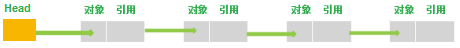
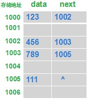
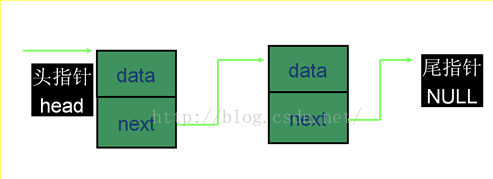

一、学习自：
- http://www.cnblogs.com/skywang12345/p/3308807.html
- https://www.cnblogs.com/ITtangtang/p/3948610.html
- https://www.cnblogs.com/xrq730/p/5005347.html
- https://blog.csdn.net/qq_19431333/article/details/54572876
- https://blog.csdn.net/androidcon/article/details/50950629
- https://blog.csdn.net/jianyuerensheng/article/details/51200274
- https://blog.csdn.net/silent123go/article/details/52693735
- https://zhuanlan.zhihu.com/p/29627391
- https://www.cnblogs.com/xnzzj/p/4509034.html
- https://blog.csdn.net/nzfxx/article/details/51728516
二、注意点
LinkedList允许为空LinkedList允许重复数据LinkedList有序LinkedList非线程安全- 如果使用普通
for循环遍历LinkedList,在大数据量的情况下,其遍历速度将慢得令人发指,较快的是foreach循环
LinkedList可以被当作堆栈、队列或双端队列进行操作
三、备注
1. 如果用的是1.8版本的,可以看第四个链接。当然,可以看看前三个老版本的源码实现,进行对比学习。
2. LinkedList是一个继承于AbstractSequentialList的双向链表。当我看到双向链表时就感觉懵逼,这是什么玩意？？？是不是还有单向链表？？？
2.1 要想解决上述问题,首先得大概知道什么是链表。可以看百度百科了(有条件的看维基百科)或者本文开头的第5和第6个以及第8个链接。
小总结一下：链表是一种数据结构,和数组同级。是一条相互链接的数据节点表。每个节点由两部分组成：数据和指向下一个节点的指针。一般来说,链表的头结点不存放具体的数据,所以也被称为哑节点(dummy node)。原因在于这样可以比较好地区分链表的头结点,而且可以大大简化链表的各种操作,避免很多不必要的边界讨论。


2.2 接下来还得知道什么是单向链表和双向链表？
单向链表可以看第7个链接的介绍。特点是链表的链接方向是单向的,对链表的访问要通过顺序读取从头部开始。

2.3 双向链表可以看第8和第9以及第10个链接。第9个讲的比较一目了然当然也比较简单了。第10个图更多。初学者可能会发现有的地方给的图示,链表头部和尾部互相链接了,其实那是双向循环链表,普通的双向链表头尾并不链接的。
3.如果大概了解过链表相关知识,那么源码看起来就会省力很多。源码中类似下面这样的：
1 2 3 4 5 6 7 8 9 10
| private static class Node<E> { E item; Node<E> next; Node<E> prev; Node(Node<E> prev, E element, Node<E> next) { this.item = element; this.next = next; this.prev = prev; } }
|
起出看肯定不理解这是什么玩意？只能靠猜大概猜对。但是为什么可以这样实现估计都不敢想。其实这里定义的是链表单个节点。在HashMap等源码里都有类似的形式。
四、示例
以一个小例子来理解LinkedList内部增删改机制：
1 2 3 4 5 6
| LinkedList linkedList = new LinkedList<>(); linkedList.add("one"); linkedList.add("two"); linkedList.add(0, "yibu"); linkedList.get(1); linkedList.push("four");
|
源码分析(其实就是互相引用)：
1 2 3 4 5 6 7 8 9 10 11 12 13 14 15 16 17 18 19 20 21 22 23 24 25 26 27 28 29 30 31 32 33 34 35 36 37 38 39 40 41 42 43 44 45 46 47 48 49 50 51 52 53 54 55 56 57 58 59 60 61 62 63 64 65 66 67 68 69 70 71 72 73 74 75 76 77 78 79 80 81 82 83 84 85 86 87 88 89 90 91 92
| transient Node<E> last; public boolean add(E e) { linkLast(e); return true; } * Links e as last element. 作为最后一个节点插入 */ void linkLast(E e) { final Node<E> l = last; final Node<E> newNode = new Node<>(l, e, null); last = newNode; if (l == null) first = newNode; else l.next = newNode; size++; modCount++; } public void add(int index, E element) { checkPositionIndex(index); if (index == size) linkLast(element); else linkBefore(element, node(index)); } * Inserts element e before non-null Node succ. */ void linkBefore(E e, Node<E> succ) { final Node<E> pred = succ.prev; final Node<E> newNode = new Node<>(pred, e, succ); succ.prev = newNode; if (pred == null) first = newNode; else pred.next = newNode; size++; modCount++; } public E get(int index) { checkElementIndex(index); return node(index).item; } Node<E> node(int index) { if (index < (size >> 1)) { Node<E> x = first; for (int i = 0; i < index; i++) x = x.next; return x; } else { Node<E> x = last; for (int i = size - 1; i > index; i--) x = x.prev; return x; } } public void push(E e) { addFirst(e); } public void addFirst(E e) { linkFirst(e); } private void linkFirst(E e) { final Node<E> f = first; final Node<E> newNode = new Node<>(null, e, f); first = newNode; if (f == null) last = newNode; else f.prev = newNode; size++; modCount++; }
|